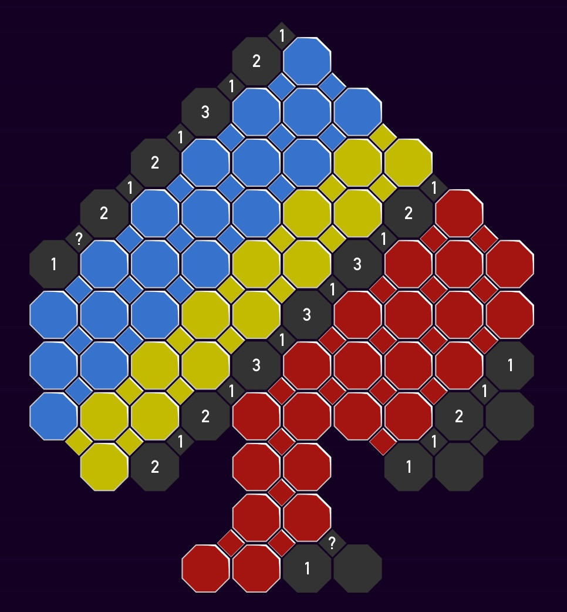
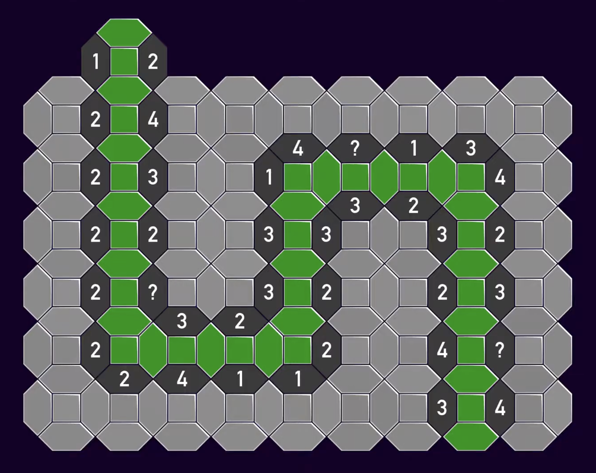

What Makes Tametsi So Satisfying?
January 19, 2026 / game, opinion, note-to-self
For the last month I’ve been completely addicted to the logic puzzle game Tametsi. Put briefly, it’s ordinary Minesweeper but with a set of 160 hand-crafted puzzles rather than a randomly generated starting board. Beyond the Minesweeper rules that we’re all familiar with, there are only a couple of additions: non-square/irregular grids for many of the puzzles, and “global” constraints, such as a fixed number of mines in cells of a particular colour or along a specified line.
I finally finished all the available puzzles and so Tametsi has released its grip on me. I’ve been trying to figure out what made it so compelling, and here’s the best I could come up with.

The Good
First, there’s surprising variety in the puzzles. I don’t mean just in their shape and layout (which is often attractive), but in the techniques required to solve them. This is what sustains the game through hundreds of puzzles; for me it never went stale.
Most importantly, these techniques are never written out or explained. Rather, they are discovered out of necessity as you go through. Indeed, I can’t even be sure whether I even figured out all the “intended” techniques and strategies, or whether I came up with any unintended ones. There’s likely several different ways to reason your way to the same conclusion.
Once a technique has been (tacitly) established in a puzzle, places to use it pop up frequently in future puzzles. I think this is the key to what makes these techniques satisfying: it’s not so much from figuring the trick out the first time, but rather from “powering up” and being able to use it fluidly when opportunities appear in future puzzles.
Often, the reasoning required is local to a few cells. This means that an overall board often splits into many smaller puzzles that one can make progress on independently. The new “global” constraints I mentioned above are key to pulling things back together; solving one local puzzle can unblock another one across the board in an interesting way.
Sometimes, things fall into place and you can reveal one cell after another, leading to a nice “on a roll” feeling. This often happened to me after some piece of trickier reasoning, and felt a bit like a reward.
Speaking more generally, the puzzles are not too hard. There is certainly a ramp over time and a couple of noticeable jumps, but at no point did I feel totally overwhelmed. There is a built in facility for making annotations on the board and this was enough to get by; it’s not the sort of puzzle where you need to take notes on a sheet of paper and really focus. This made it work nicely as a “second-screen” game, to listen to a podcast or watch TV alongside. (If your attention is as fried as mine has become.)
Similar to a lot of other puzzle games these days, there are always a few different puzzles unlocked at any given time, so if you’re truly stumped you can just bail and try a different one for now. Another game I remember this working very well for is A Monster’s Expedition, though in that case it’s a bit more literal: your character can literally walk away from any puzzle you’re finding too hard at the moment.
Re-reading what I’ve just written in this section, none of it sounds particularly special, and certainly many puzzle games have similar features. But somehow it all fits together especially well.
The Less Good
A game like Tametsi has an unavoidable dilemma. What should happen if you uncover a mine? In ordinary Minesweeper there’s no issue: you just lose and have to randomly generate a new board. But in Tametsi, writing off the entire puzzle permanently seems a bit harsh, after all, there’s not an unlimited number to pull from! All Tametsi can do here is work on the honour system. You have the opportunity to undo and proceed as though you never clicked. The only consequence is that, once solved, the puzzle doesn’t get a little “perfect” annotation on the puzzle select screen.
In my playthrough, if I did make a mistake (whether genuine or misclick), I’d have to decide whether I could truly un-see what I just saw. Often I decided this was possible, or I could immediately find a valid deduction for that mine. Sometimes it did truly feel like a spoiler and the only fair thing to do was reset the whole puzzle and leave to work on a different one in the hope that by the time I came back to it I will have forgotten that mine.
There were two boards where I repeatedly made some bad deduction and had to reset, like the one screenshotted below. I don’t actually know whether I was making the same mistake each time, after all, the whole point was to try to forget and start afresh!

There’s an even more insidious issue. What if I use incorrect reasoning to reveal a cell, but just by chance the cell truly is empty? Who knows how many times I did this in my playthrough and never got punished! In principle there’s a way to detect this, by checking on each move whether there’s a valid deduction that could have lead to it.Or rather, whether it’s consistent with the known constraints for the cell you just clicked to actually be a mine. Clues by Sam does this, and pings you if you mess up this way. I haven’t looked into it, but I assume the Clues by Sam backend precomputes all valid sequences of deductions in advance and checks whether your move is one of them. The same might work for Tametsi, though the boards are much bigger so it may not be feasible.
I played Tametsi on a Steam DeckThere’s no Mac, unfortunately., using the trackpad and triggers as a replacement for a mouse. This worked fine but not perfectly: using the built-in pen was fiddly and inaccurate and I would sometimes overshoot the tile I intended to click on, causing unearned “mistakes”. This may have been fixable by tweaking the options on the Steam Deck side more than I did. By default, the game doesn’t launch at the correct resolution for the screen. Fixing this makes it look slightly crisper and nicer, though I didn’t actually notice until I was half way through.